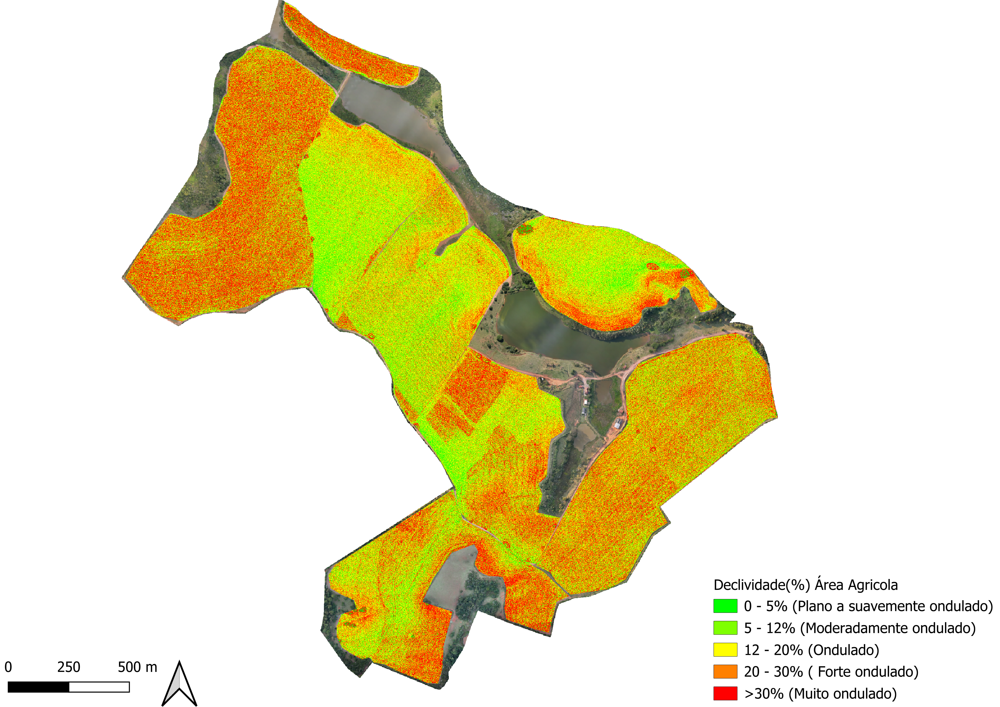

🗺️ Mapas Técnicos
🛰️ 1. Ortomosaico Completo da Área
Ortomosaico obtido a partir do levantamento aéreo da propriedade, permitindo a visualização detalhada da ocupação e das características espaciais da área levantada.

🌱 2. Área Cultivada
Mapa da área destinada à exploração agrícola, permitindo visualizar a distribuição das áreas cultivadas dentro dos limites da propriedade.

🌳 3. Mapa Ambiental
Mapa destinado à representação das áreas de vegetação nativa, Áreas de Preservação Permanente (APP), Reserva Legal e demais elementos ambientais identificados no levantamento.

🛣️ 4. Estradas Internas
Mapa das principais estradas e acessos internos da Fazenda São Benedito, auxiliando na avaliação da logística e da circulação dentro da propriedade.

📐 5. Mapa de Declividade
Mapa de declividade da área agrícola da Fazenda São Benedito, apresentando a distribuição das classes de relevo e sua participação na área agricultável.

Distribuição das classes de declividade
| Classe | Declividade | Caracterização | Área (ha) | Participação (%) |
|---|---|---|---|---|
| 1 | 0–5% | Plano a suavemente ondulado | 15,98 | 6,3 |
| 2 | 5–12% | Moderadamente ondulado | 60,11 | 23,6 |
| 3 | 12–20% | Ondulado | 75,85 | 30,1 |
| 4 | 20–30% | Forte ondulado | 57,26 | 22,7 |
| 5 | >30% | Muito ondulado | 43,93 | 17,34 |
| Total | 253,13 | 100% | ||
Fonte: Elaborada pelos autores.